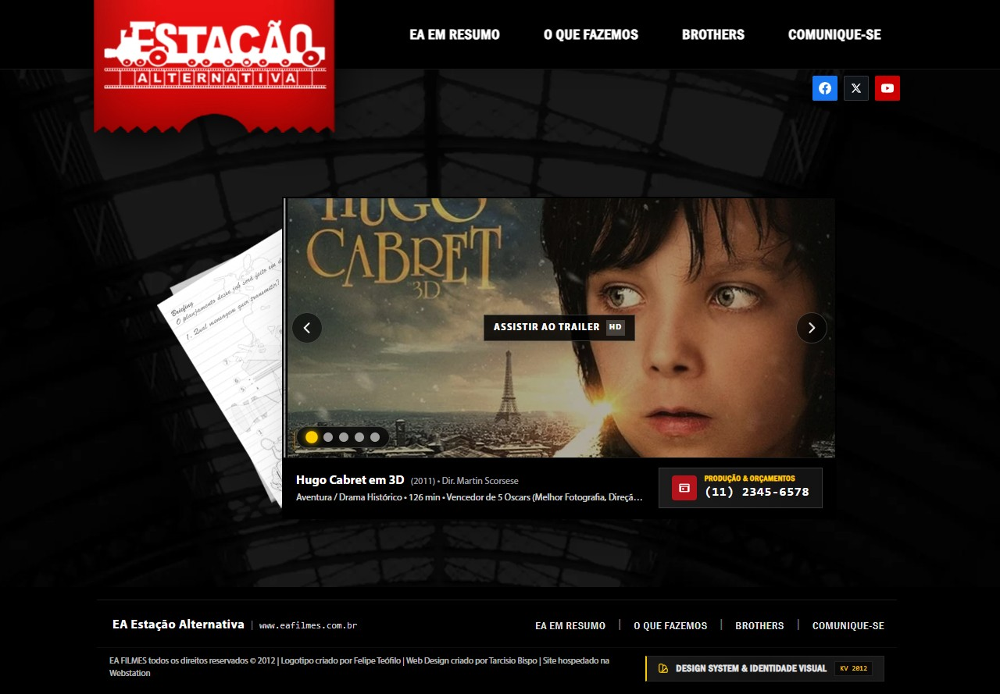
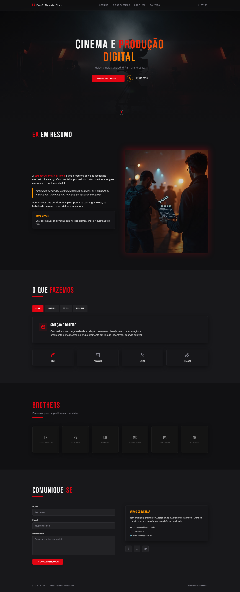

EA Filmes — Website institucional
Versão para impressão: resumo executivo, comparativo visual e notas de processo.

Resumo
Site institucional para EA Filmes — entrega de identidade aplicada, kit de estilos e documentação para manutenção. Direção escolhida prioriza presença editorial e narrativa visual.
Comparativo visual

Decisão
Optou-se pela Versão EA por melhor alinhamento com posicionamento editorial e potencial de conversão qualitativa em projetos audiovisuais. A Versão Alternativa fica arquivada para usos táticos.
Notas técnicas
- Tipografia: tokens aplicados (`--font-family-serif` para títulos, `--font-family-sans` para corpo).
- Imagens: assets otimizados, múltiplos formatos disponíveis na pasta `images/eafilmes/`.
- Componentes: uso exclusivo do design system do repositório para consistência.